Paper might just be the most versatile craft supply in your home. You can fold it, curl it, cut it into any shape, and layer it into something that looks genuinely impressive, no special skills required. These cute crafts with paper are proof of that. We rounded up 20 of our favorites, all made with basic supplies, all low-mess, and all absolutely worth doing on a quiet afternoon with your little one. 🎨
Whether your child is two or ten, there is something on this list for them. Some ideas take just 15 minutes, others are a little more involved, but every single one ends with a result your kid will want to show off.
What You'll Need
These supplies cover most of the 20 cute paper crafts on this list, so one quick gather before you start saves you from stopping mid-project. ✂️
- Construction paper, a colorful assorted pack covers nearly every idea here.
- Glue sticks, washable and easy for small hands to manage.
- Child-safe scissors, blunt-tipped for toddlers and young crafters.
- Googly eyes, self-adhesive assorted sizes work great for animals and characters.
- Washable markers or crayons, for adding details and decorating.
- Clear tape or a stapler, handy for a few of the hanging and 3D projects.
- String or yarn, needed for the mobiles and hanging crafts on the list.
20 Cute Crafts with Paper Your Kids Will Adore
1. Paper Butterfly
Fold a sheet of colorful construction paper accordion-style, then pinch it in the middle and secure it with a pipe cleaner or a small strip of paper to form the body. Fan out each side for the wings and let your child decorate with marker swirls, dots, or their own patterns. This is one of the most satisfying cute crafts with paper for little ones because the transformation from flat sheet to fluttery butterfly happens so quickly. Add googly eyes to the body for an extra charming touch.
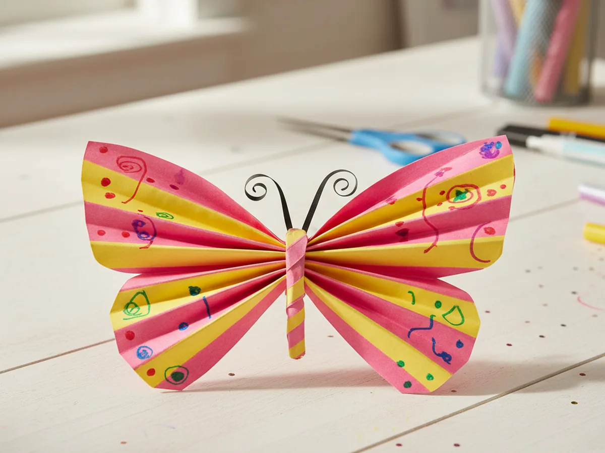
2. Paper Flower Bouquet
Cut petal shapes from tissue paper or construction paper, layer several petals together, and twist the base around a green paper stem. Make five or six flowers, arrange them together, and you have a bouquet that never wilts. Kids love choosing colors and mixing petals, and the result looks beautiful on a windowsill or as a gift for grandma. This is a classic among cute paper crafts that works at almost any age with a little prep from you.
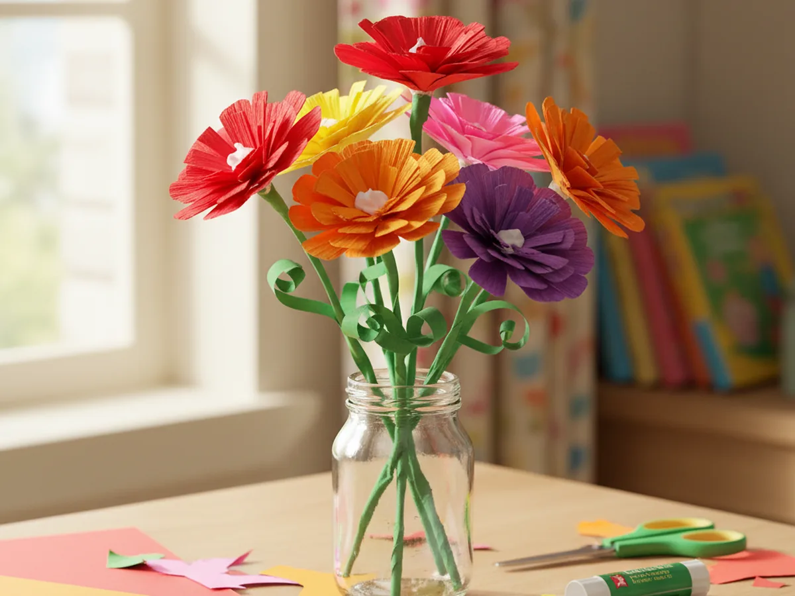
3. Paper Rainbow
Cut strips of construction paper in red, orange, yellow, green, blue, and purple, then curve them into arcs and glue them on top of each other to build a layered rainbow. Add small white cotton-ball clouds at each end for a finishing touch. It is one of those cute crafts with paper that toddlers can fully participate in, since gluing the arcs in place requires no cutting at all if you prep the strips ahead of time. The final result looks cheerful on any wall or bulletin board.
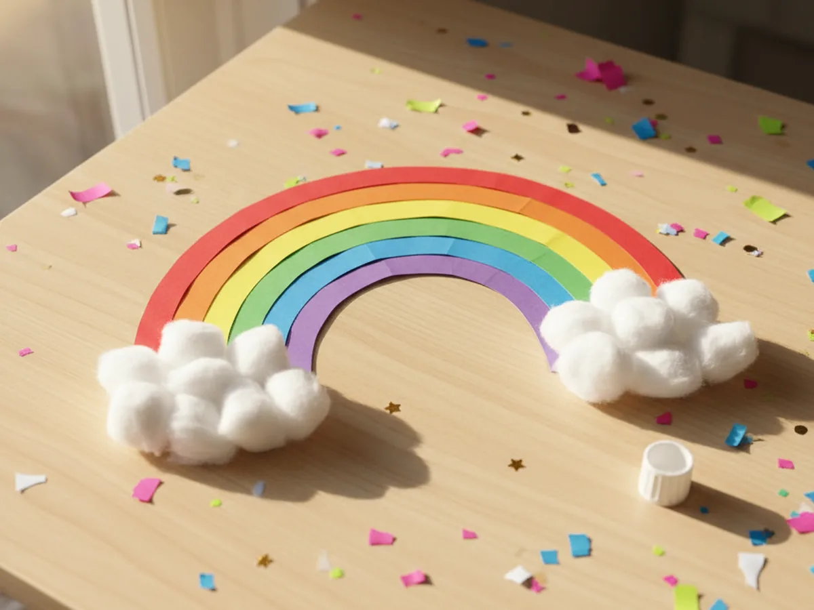
4. Paper Heart Wreath
Cut strips of paper and fold each one into a small heart shape, then arrange and glue the hearts in a circle on a cardstock base to form a wreath. Use one color for a clean look, or mix pinks and reds for a Valentine feel, or greens and whites for spring. Older kids can cut and fold the hearts themselves, while younger ones love gluing them into the circle. This is a sweet project to hang on a bedroom door or gift to a family member.
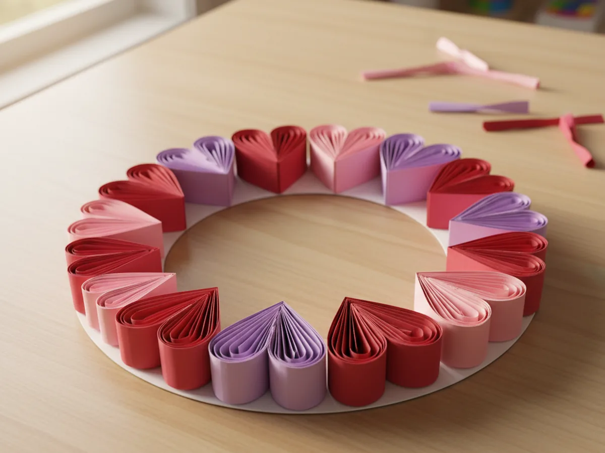
5. Paper Crown
Cut a long strip of cardstock and draw or cut zigzag points across the top edge to create a crown shape. Let your child decorate it with markers, stickers, or glued-on paper jewel shapes, then size it to their head and tape the ends together. Every child feels like royalty wearing something they made themselves. This ranks as one of the most requested cute paper crafts in our house because it takes less than 20 minutes and has zero disappointment built in.
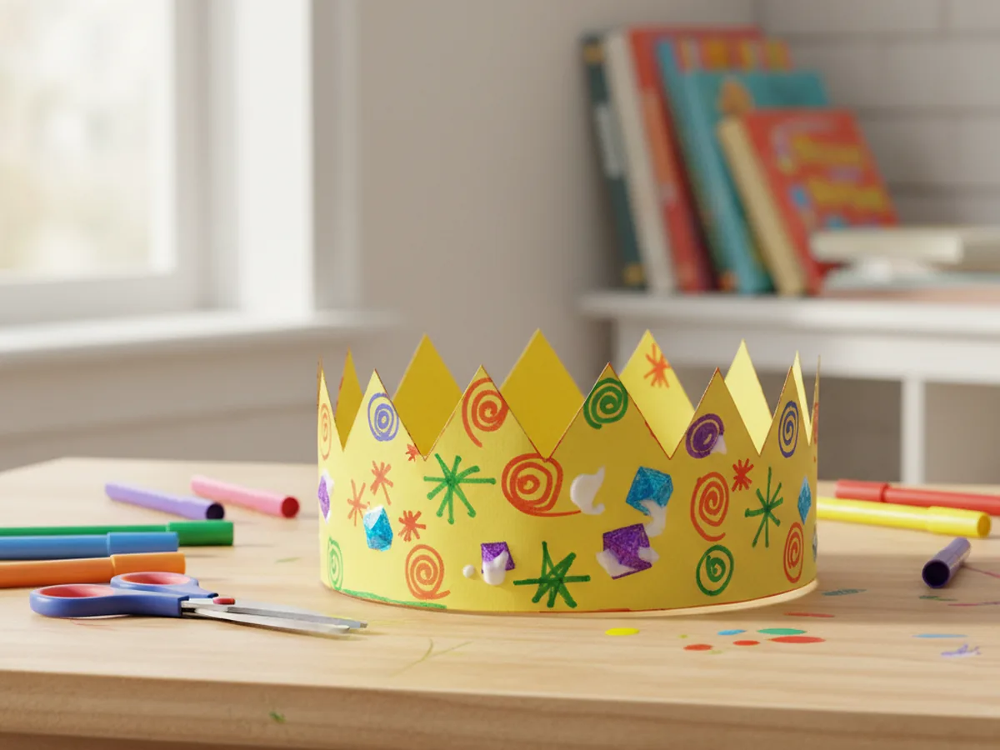
6. Paper Snail
Roll a long strip of paper tightly into a spiral to form the shell, then glue it onto a rectangular body shape with a small head and two little antenna stubs poking out. Draw on a friendly face and your snail is done. This is a wonderfully calm, quiet craft where even the act of tightly rolling the paper strip feels satisfying for little hands. Use bright or patterned paper for the shell to make it look extra charming.
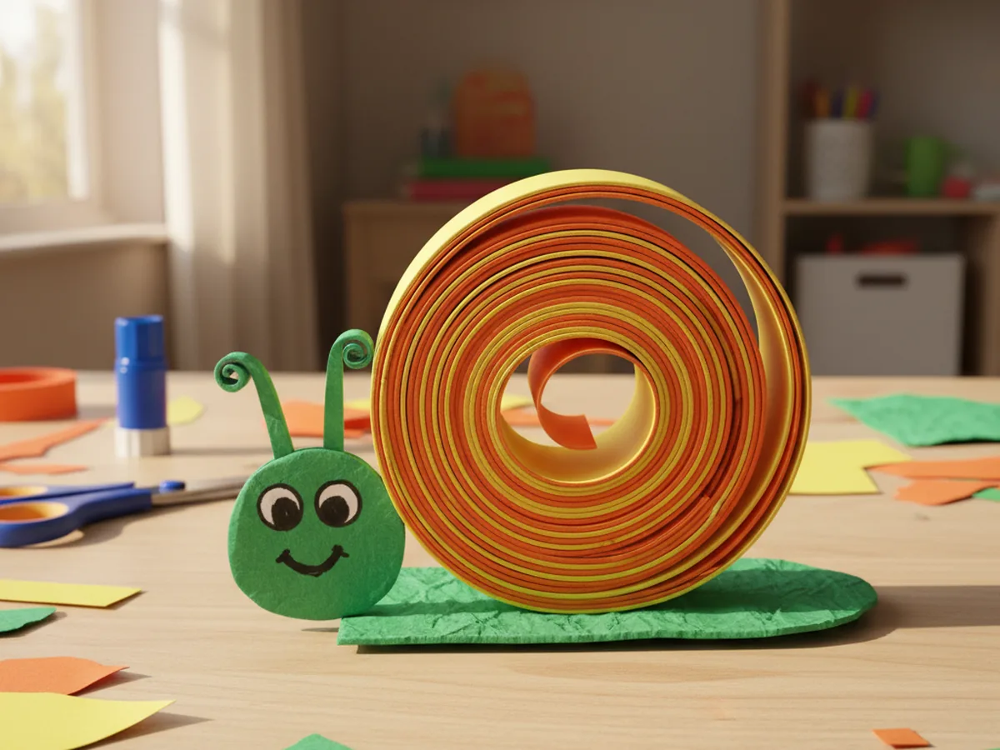
7. Paper Caterpillar
Trace and cut circles in two alternating colors, then glue them in a long overlapping chain to form a wiggly caterpillar body. Add googly eyes and draw a smile on the first circle to bring your critter to life. Accordion-fold two thin paper strips for legs if you want to take it up a notch. This is one of those cute crafts with paper that younger kids find endlessly fun because they can keep adding circles to make their caterpillar as long as they like.
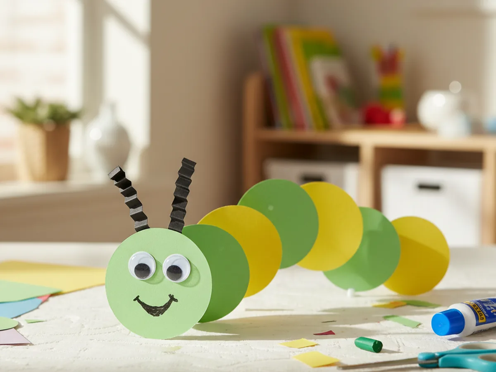
8. Paper Pinwheel
Cut a square of paper, fold each corner toward the center without creasing all the way, and pin the folded corners to a small stick or pencil with a brad fastener to create a classic spinning pinwheel. Decorate with stripes, polka dots, or swirls before folding for a more vivid effect. Watching it spin in the breeze on a sunny day makes this one of the most rewarding cute paper crafts to finish. Use a contrasting backing color so both sides pop as it turns.
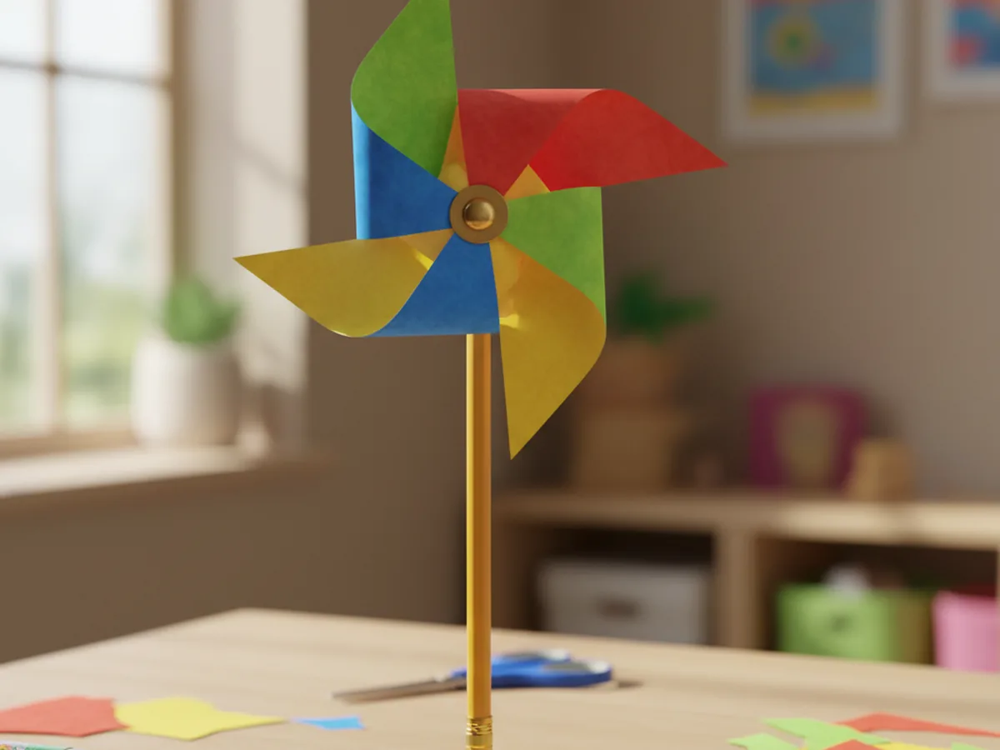
9. Paper Sun
Cut a large yellow circle for the sun's face, then cut many narrow strips of yellow or orange paper and fold them accordion-style before gluing them all around the edge as rays. Draw a cheerful face in the center. This simple project is perfect for toddlers who can glue the rays on while you hold the circle steady. It is one of the easiest cute crafts with paper to finish in under 20 minutes, and the sunny result is adorable hung on a window.
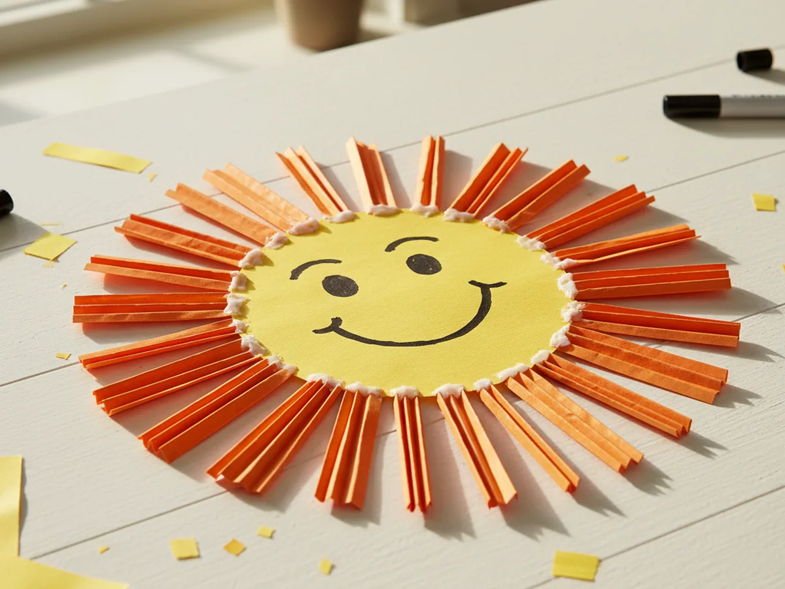
10. Paper Bird
Fold a square of paper in half diagonally, then fold one corner up to form a beak and tuck it in slightly. Flip the paper over and draw on a round eye, and your bird is ready. Older kids can try a simple origami crane shape with a bit more folding. Make several birds in different colors and hang them from a branch or string for a sweet mobile. Cute paper crafts like this one are a gentle introduction to origami without any frustrating complexity.
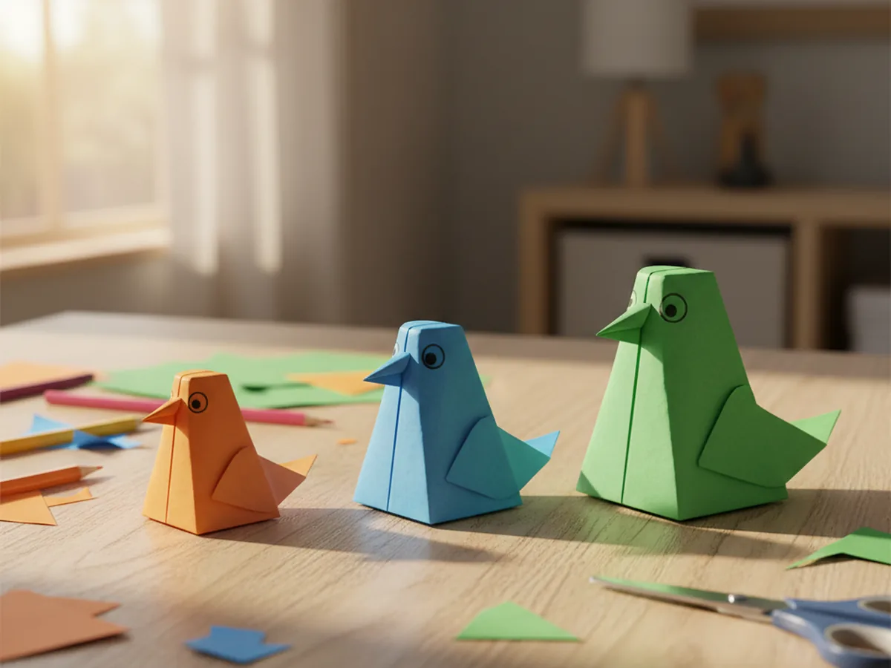
11. Paper Hot Air Balloon Scene
Cut a large teardrop or oval shape from striped or rainbow paper for the balloon, then attach a small rectangular basket shape below it with two short strings of yarn. Glue the whole scene onto a blue cardstock background and add small paper clouds. This is a wonderful display project, especially if you let your child choose the color stripes for the balloon. Frame it afterward and it becomes real wall art they made themselves.
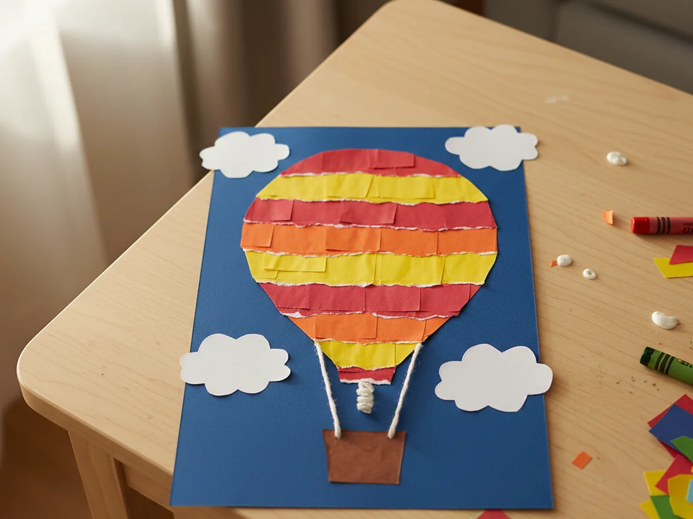
12. Paper Origami Heart
Fold a square of paper in half, then fold the top two corners down and the bottom point up to form a heart shape. The steps are simple enough for school-age kids to follow on their own, and younger children can manage with your guidance. Make a stack in different colors and use them as gift tags, bookmarks, or notes. A folded paper heart feels more personal and special than any store-bought card.
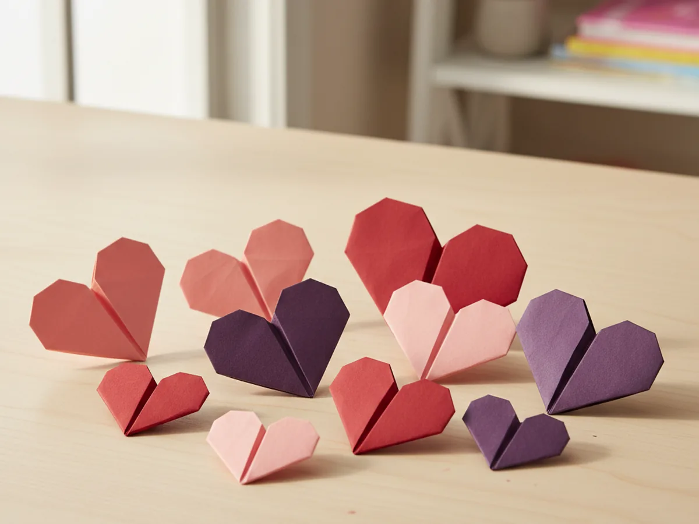
13. Paper Dog Face Bookmark
Fold a square piece of paper in half to form a triangle, then fold the top two corners down and one layer of the bottom point up to create a pocket. Add googly eyes, draw on a nose and floppy ears, and your dog bookmark is ready to grip the corner of any page. Kids who love animals are completely delighted by this one, and it is genuinely useful once it is done. This is among the most repeatable cute crafts with paper because kids want to make one for every book they own.
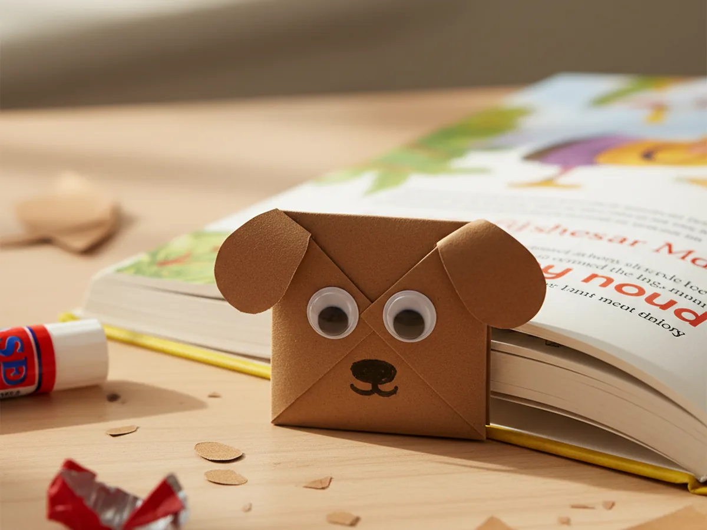
14. Paper Kite
Cut a diamond shape from a bright sheet of paper, add a long paper strip tail at the bottom with small bow-tie knots tied along it, and attach a length of string to the top point. Let your child decorate the kite face with markers before assembly. Hung on a wall or window it looks cheerful, and a slightly sturdier version made from cardstock can even fly on a calm breezy day. It is a timeless shape that feels fun and playful as a cute paper craft.
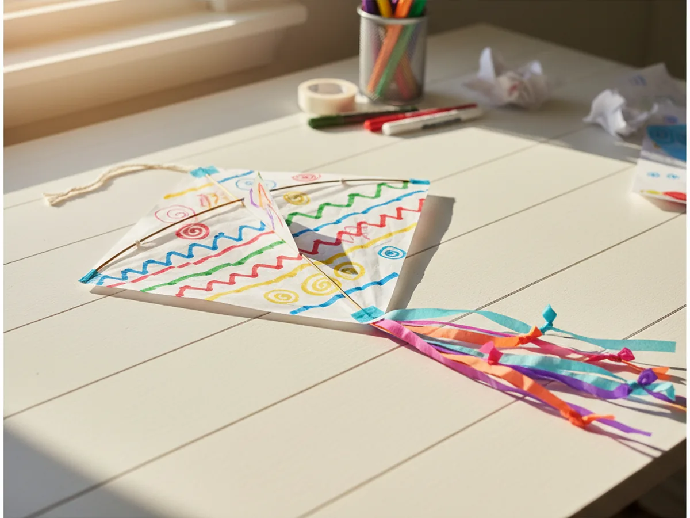
15. Paper Fish
Cut a rounded fish body from blue or orange paper, then cut a separate triangular tail and glue it on. Add paper scale shapes cut from a contrasting color and overlapped slightly to create texture, then finish with a googly eye and a drawn smile. You can make a whole school of fish and hang them from strings across a window for a beautiful underwater display. This is one of those cute crafts with paper where the repetition is part of the fun.
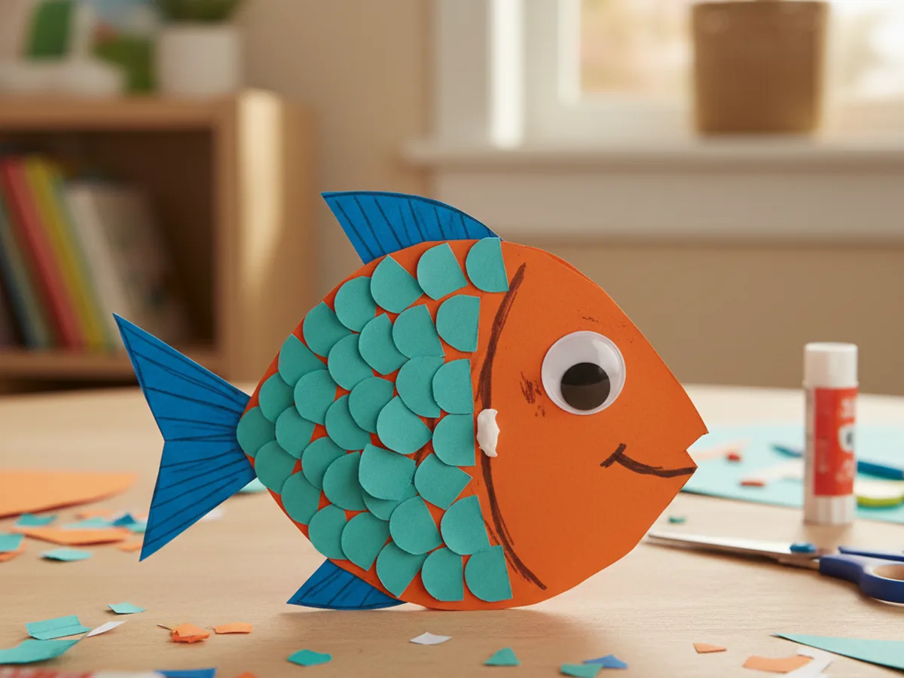
16. Paper Bunny
Cut two large oval ear shapes and glue them to the top of a round paper face. Add a smaller pink oval inside each ear, two googly eyes, a small triangle nose, and a curvy drawn smile. Glue the face onto a toilet paper roll or a folded paper cylinder if you want it to stand upright on a shelf. Spring or Easter makes this one extra special, but honestly it is a sweet cute paper craft for any time of year.
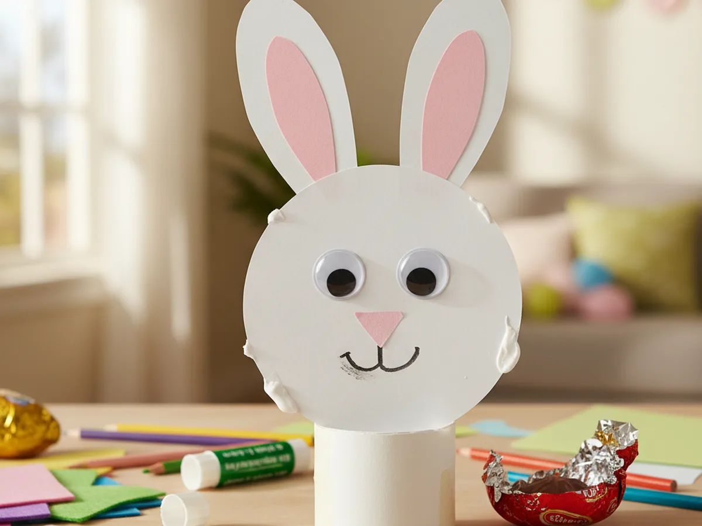
17. Paper Dragonfly
Roll a thin strip of green or blue paper tightly into a long narrow body shape, then cut four large wing shapes from translucent or light-colored paper and attach two on each side. Draw simple vein lines on the wings with a marker and add a tiny googly eye at the head end. These look magical hung from a thread and gently spin in the air. Making a small swarm of them in different sizes turns this into a gorgeous window display.
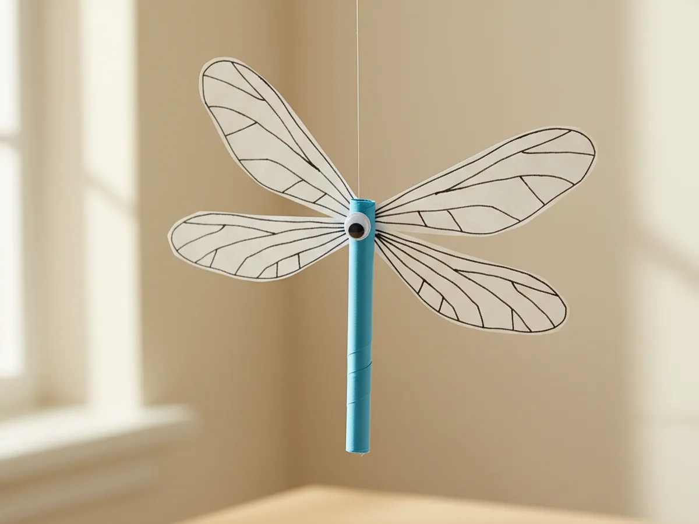
18. Paper Star Mobile
Fold small squares of paper into simple five-pointed stars by folding and tucking, or cut star shapes and fold them in half to give them dimension. Attach several to varying lengths of string, then hang them all from a wooden twig or a long strip of cardstock for a beautiful mobile. The gentle movement of cute paper crafts like this one makes any bedroom feel more magical. Use metallic or glittery paper for an extra sparkly effect.
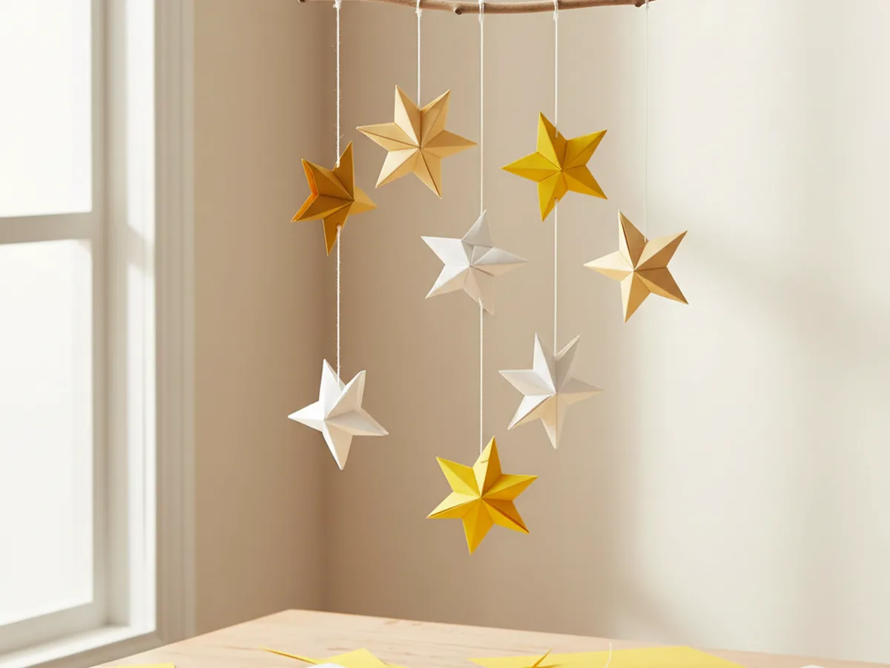
19. Paper Ladybug
Cut a large red circle and a smaller black semicircle for the head, then draw a line down the center of the red body and add several black dot circles. Glue on googly eyes and accordion-fold four thin black paper strips for legs. The whole thing comes together in about 15 minutes, making this one of the easiest and most adorable cute crafts with paper for toddlers. Prop the finished ladybug up against a plant pot or tape it to a window for a cheerful bit of decor.
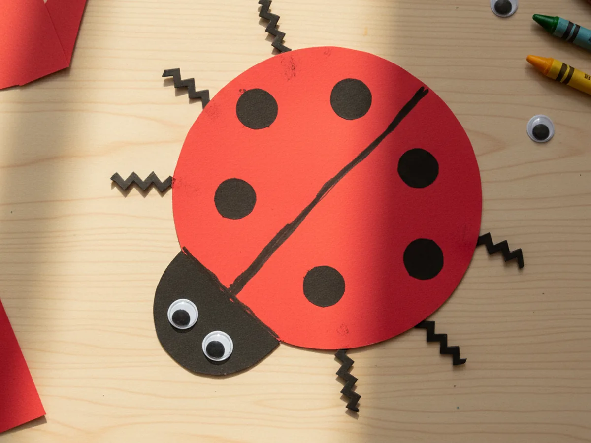
20. Paper Elephant
Cut a large grey circle or rounded rectangle for the body, a smaller circle for the head, and a long curved strip for the trunk. Cut two large ear shapes and a small tail, assemble everything with glue, and draw on gentle round eyes. Your elephant can stand flat as a picture or fold the base into a tab so it stands upright on a shelf. This is a charming finishing project that caps a full afternoon of cute paper crafts beautifully.
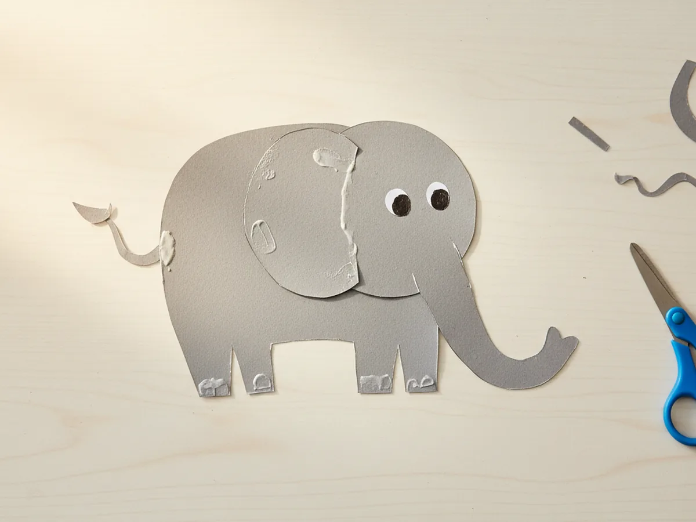
Final Thoughts
Paper really is one of the most underrated craft supplies out there. It is affordable, available in every color, and forgiving enough that even a first attempt looks great. These 20 cute crafts with paper are all things you can do right now, with what you already have at home, no planning required.
Pick the one that caught your eye, pull out a few sheets of paper, and enjoy the process together. The finished result will mean a lot more because you made it side by side. ✨
More Crafts You'll Love
If this list has your little one in full craft mode, these two are a perfect next step.
There are 20 ideas here, so you are never stuck for what to make next. Happy crafting! 🌟